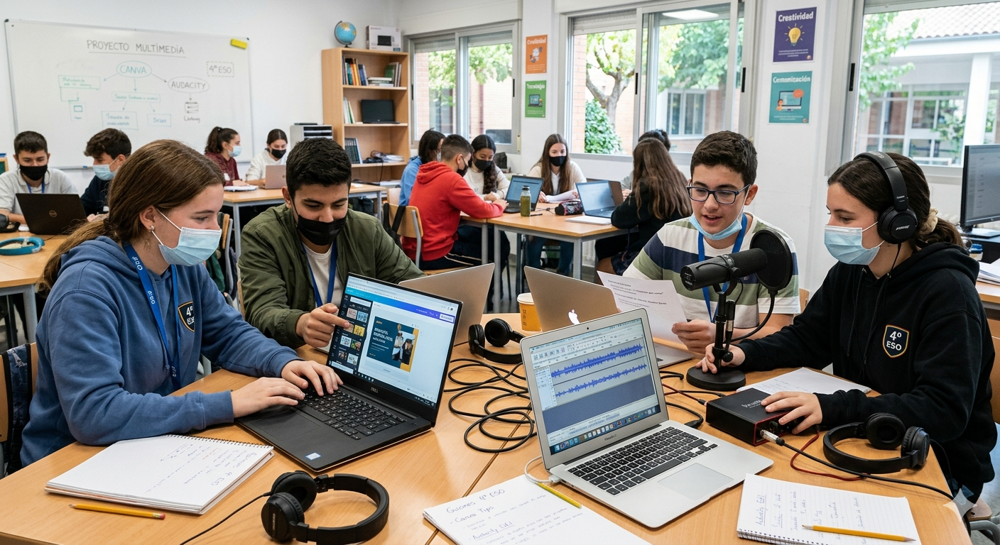

Producto final

DESCRIPCIÓN Y JUSTIFICACIÓN DEL PRODUCTO FINAL
Para el desarrollo del producto final de la SdA propuesta para mi alumnado de 4º ESO, de la materia de Biología y Geología: “Viaje al interior de la vida: explorando la célula”, propongo utilizar la herramienta Canva para que el alumnado presente el informe de prácticas de laboratorio y Audacity para exponer a modo podcast, sus conclusiones finales sobre lo visto y trabajado en esta SdA.
El objetivo de emplear estas herramientas es poner en práctica y mejorar la competencia digital de mi alumnado, a la vez de aportarle a la realización de una práctica de laboratorio una visión más actual y motivadora.
La elección de estas herramientas se justifica por varias razones:
- Edad, características y competencia digital: El alumnado de 4º ESO ya posee competencias digitales básicas y durante los cursos anteriores hemos trabajado con Canva. Además, al cursar materias como Computación y Robótica han mejorado sus habilidades en esta aplicación. Por otro lado, al estar desarrollando en mi centro la radio escolar, el alumnado ya ha grabado y editado podcast, empleando Audacity.
- Contexto, accesibilidad y disponibilidad: En el centro disponemos de aula de informática a reservar en las horas que se vayan a usar, independiente de la materia, y carrito de ordenadores portátiles con la herramienta digital Audacity ya instalada. También se tiene equipo de grabación con auriculares y micrófono. Además, al disponer todo el alumnado de correo electrónico corporativo con cuentas g.educaand, tienen acceso gratuito a Canva educativo.
- Versatilidad: La versatilidad de Canva y Audacity los convierte en herramientas especialmente útiles para trabajar con alumnado de 4º de ESO, ya que permiten desarrollar múltiples competencias de forma creativa e interdisciplinar. Por un lado, Canva facilita la creación de presentaciones, infografías, pósteres científicos o vídeos explicativos, lo que ayuda al alumnado a organizar y comunicar la información de manera visual y atractiva. Además, su uso fomenta la competencia digital, el sentido estético y la capacidad de síntesis. Por otro lado, Audacity permite grabar, editar y mezclar audio, siendo ideal para la elaboración de podcasts, entrevistas o explicaciones orales sobre contenidos científicos. Esto potencia la expresión oral, la creatividad y el trabajo colaborativo.
Finalmente, me gustaría resaltar que el uso combinado de ambas herramientas favorece metodologías activas empleando herramientas digitales, ya que el alumnado no solo adquiere conocimientos, sino que los aplica en productos finales propios, desarrollando autonomía, pensamiento crítico y habilidades comunicativas, a la vez que se motiva a seguir aprendiendo.
¿EN QUÉ CONSISTEN LAS TAREAS PROPUESTAS COMO PRODUCTO FINAL DE LA SDA?
1. INFORME CIENTÍFICO DIGITAL ELABORADO CON CANVA
La tarea consiste en la elaboración de un informe de la práctica de laboratorio realizada, mediante Canva, siguiendo el método científico.
Se llevará a cabo en grupos de 3 alumnos/as. (Agrupamientos).
La duración aproximada es de 1 sesión lectiva de 1 hora.
Las herramientas que se van a necesitar son el guion de prácticas facilitado por la profesora en formato digital, disponible en Google Classroo y Padlet, Canva y ordenador/tablet con acceso o conexión a internet.
La tarea se llevará a cabo en el aula de referencia (Ubicación).
2. GRABACIÓN Y EDICIÓN DE PODCAST CIENTÍFICO CON AUDACITY
La tarea consiste en la creación de un podcast con Audacity, en el que se incluya un análisis final de la práctica a modo conclusión. La duración del podcast deberá ser de unos 2-3 minutos. Podrá contener efectos especiales de edición, sonidos, onomatopeyas, etc.
Agrupamientos: grupos de 3 alumnos/as, los mismos que para la creación del Canva, puesto que ambas actividades constituyen el producto final.
Duración aproximada: 30 minutos.
Herramientas que se van a emplear: Ordenador con Audacity y micrófono.
Ubicación: aula ordinaria y aula de grabación. Se podrá hacer uso también del aula de informática del centro.